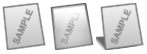
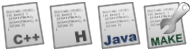

|
Собственный IcoSet
Автор: Green Light
Вопросы стиля и методы реализации.
Для знающего человека слово «icoset» говорит само за себя. В этом слове «ico» означает «icon» – значок, иконка, а «set» – установка. Понятие «установка значков» применимо ко многим «отраслям продукции», таким как программные проекты, оболочки ОС, web-сайты и многое другое. В этой статье рассматриваются основные аспекты стиля, вопросы, касающиеся разработки и методы реализации.
Итак, начнем. Иконки. Почти все видят их каждый день в окнах операционных систем (кроме консольных ?), они на панелях инструментов, в меню, на web-страницах… Иконки являются неотъемлемой частью дизайна интерфейса любого программного продукта. За много лет работы у пользователя появилась возможность менять их, подбирать на свой вкус. Появились так называемые «темы». Однако, понятие icoset – гораздо более обширное, оно включает в себя не столько набор элементов, сколько объединение их по стилю. Кому-то этот стиль нравится, кому-то нет, а кто-то вообще их игнорирует. Так чем же определяется стиль?
Вопросы стиля
Стиль Icoset`а ограничен возможностями той среды, где он применяется. Например, если брать Windows до XP, то можно легко вспомнить 256-цветные ужастики на рабочем столе и т.д. Следовательно, при разработке пакета, например для Stardock Icon Packager необходимо учесть этот нюанс. Дело в том, что программное средство, с помощью которого вы рисуете, наверняка поддерживает 32-хбитный цвет с прозрачностью. Стиль также определяется наличием или отсутствием определенных качеств, о которых и пойдет речь далее. Итак, рассмотрим поближе…
При задумке нового проекта учитываются многие аспекты: где он будет применяться, для чего служит, насколько тесно контактирует с пользователями и т.д. В общей сложности может получиться внушительный список вопросов, которые необходимо учесть при разработке. Те, кто разрабатывают программы в одиночку, наверняка особо не задумываются об этом сразу. В более многочисленных группах, где существует разделение обязанностей, и где, как правило, есть дизайнер, эта забота спадает с плеч программистов. Теперь будем говорить с дизайнерами.
Выше вскользь упоминались аспекты стиля разрабатываемых графических элементов. Что ж, если условия позволяют выплеснуться духу творчества, то это замечательно, если же нет, приходится выкручиваться…
1. Основные аспекты стиля.
Их очень много. Если честно, профессиональный дизайнер сам должен выбирать их для себя и учитывать при создании графики. Хотя, на самом деле они очевидны, и их можно перечислить:
Общая строгость стиля. Это касается количества прорисовываемых деталей, количества цветов (не палитры, а визуальных).
Материал. Да, это так. Надо подумать, из чего ваять иконки. Они могут быть как стеклянными, так и бумажными (или пластмассовыми)
Освещение. Подумайте, обрисовывать ли тени и отблески?
Цветовая схема стиля. На какой цвет делается акцент?
Ориентация изображений в пространстве. Как вы будете рисовать значки: лежащими на экране или повернутыми?
Объемность. Будете ли вы использовать эффекты теней и выпуклостей?
Четкость и плавность линий. Хотите ли размытое или резкое изображение... вам решать.
 Разные материалы. Черновые примеры. 2. Рекомендации по стилю значков файлов.
Значки файлов можно сделать весьма разнообразными, однако не стоит забывать о кое-какой закономерности. При разработке Icoset для ОС желательно объединить сходные типы mime в группы.
Значки определенной группы, как правило, сходятся. Это необходимо для удобства пользователя. Однако для различия типа файлов делают совершенно нехитрое: вводят различающийся элемент. Это может быть как цвет определенной детали изображения, так и написание расширения файла на самой иконке. Не бойтесь комбинировать.
Эти приемы отнюдь не новы и очень распространены. К сожалению, в стандартном icoset Windows этого нет, зато любой заметит это в icoset`ах Gnome и KDE. Вот устный пример реализации:
Допустим, вы хотите создать несколько иконок для музыкальных файлов. Для этого, если вы консерватор, и файл для вас – это листок, то за основу берите его.
Цвет и положение листка не меняйте.
Выберите в качестве различающегося элемента, например, ноты на листке.
От типа к типу меняйте цвет нот: (MP3 – темно-синий, WAV – зеленый и так далее)
Очень эффектно выглядит написание типа файла на листочке или на выноске.
PS: На значках слева используется реально написанный код программы HELLO WORLD, только уменьшенный.
Там написано:
#include <stdio.h>
int main() {
printf("Hello, World!");
// This is program text for sources.ru icoset
return 0;
}
 Вполне готовые значки файлов языков программирования. 3. Стиль папок.
Еще раз стоит напомнить: не забывайте о концепции. Стиль папок лучше всего приблизить к стилю значков файлов. Но здесь речь пойдет уже не только о папках ОС.
Итак, допустим, пиктограммы папок будут использоваться в новом файловом менеджере с анализатором контента папок. И тогда спрашивается, зачем этот анализатор контента, и где его использовать? Программист сразу ответит: «Выводить сообщение о преобладающих типах в строке состояния. Или выписывать его рядом с папкой». У дизайнера может быть другое мнение на этот счет. Для него разумнее будет создать несколько стилей папок с разными изображениями файлов в них. К примеру, для пустого каталога можно нарисовать закрытую папку, или открытую, но пустую. Для папки с рисунками целесообразно создать открытую папку со значком файла изображения внутри. Это придает наглядность файловой системе, тем самым, облегчая работу с файловым менеджером и ускоряя навигацию по дискам.
Это же можно применить и к оболочке ОС. Больше сказать здесь нечего.
Черновые примеры папок.
4. Стиль устройств.
Последняя, довольно большая группа значков – значки устройств. Если вы усвоили азы, которые надо бы понимать при создании icoset, то придумать стиль устройства труда не составит. Но тут необходимо сказать одну вещь: если вы не можете выбрать определенный стиль для оборудования, то выполните его серым цветом. Это будет и смотреться неплохо и не повредит ЛЮБОМУ стилю.
Если начинающий дизайнер будет следовать ХОТЯ БЫ ЭТИМ ПОНЯТИЯМ, то он сможет создавать все более зрелые решения и совершенствовать свои знания, что, в конечном счете, может принести успех коллективному или индивидуальному проекту.
Моя гордость - стеклянная флешка
Методы реализации
Здесь я бы хотел поделиться некоторыми методами и приемами реализации «стильных штучек» на примере программы AWIcons PRO (9.02).
Начинающим пользователям часто не удается выполнить какие-либо операции, и они отступают, бросая дело и увлечение. Здесь приведены материалы и приемы работы.
1. Послойное построение изображения.
Очень важно для новичков! В AWIcons нет слоев, так что лучше почитать...
- Рисуем контур папки и заливаем его градиентом. Дублируем изображение.
- Поверх нарисованного контура рисуем крышку папки другим, отличным цветом.
- Стираем вокруг крышки контур папки, заливаем background черным (отличным) цветом, а крышку делаем прозрачной (ПКМ).
- Готовим прозрачный градиент, если хотим полиэтиленовую, прозрачную крышку. Заливаем крышку, а черный цвет убираем (ПКМ).
- Отдельно рисуем то, что будет лежать в папке. В данном случае серый листок.
- Делаем градиент и обводку линией с антиалиайзингом.
- Копируем готовый листик в картинку с контуром папки (1).
- Затем копируем крышку туда же (Закрываем папку).
- Делаем обводку.
- И небольшая ретушь.
Здесь, по сути, черновая работа, я мог и аккуратнее :)
На самом деле, роль слоев здесь выполняет дублирование изображений перед последующим шагом, раздельное рисование деталей, послойное наложение. Обратите внимание на рисунок 8: под крышкой виден лист. Такое легче всего сделать в редакторе, поддерживающем слои: просто поставить альфа-канал и настроить прозрачность. Здесь этот эффект достигается при помощи вышеперечисленных приемов и альфа-градиента.
Прозрачность выделенной области в AWicons PRO 9 также можно установить и в эффекте "непрозрачность", просто открутив ползунок в обратную сторону.
Но именно окно градиента дает настоящие возможности. Возможен плавный переход от прозрачности к матовости (на 10 изображении листок словно пропадает по крышкой внизу).
Как я делал обводку, см. ниже.
2. Антиалиайзинг и обводка
На небольших изображениях (48Х48 и меньше) обводка становится громоздкой и неаккуратной. Это особенно заметно на рисунке 9: линии обводки, несмотря на задумку, выглядят очень жирными.
Утончение линий можно совершить двумя способами:
- Включить антиалиайзинг, удерживая ПКМ, стереть с помощью прозрачной линии лишнюю толщину.
- Через "непрозрачность". Это более опасный способ. Если слегка подвинуть ползунок вправо, то линия обводки станет гуще и насыщеннее. Затем пускаем в ход способ 1. Опасность заключается в том, что непрозрачность может испортить другие детали изображения.
Применение обводки совершенно необязательно. В данном случае она была предусмотрена стилем, однако зубчатые края тоже выглядят некрасиво (рисунок 5). Если позволяют условия эксплуатации (а в Windows 9x, 2k они не позволяют) и вы не хотите делать обводку, но желаете иметь приятный внешний вид, то:
- выбрав в качестве цвета прозрачность (чтоб стирала до прозрачного фона, как в способе 2) и линию, аккуратно пройдитесь по зазубренным краям. Единственное, это эффективно на более-менее прямых участках.
3. Масштабирование и цветность.
В AWicons присутствует масштабирование с интерполяцией, но оно решает гораздо больше задач. И с ним много проблем.
Здесь я могу поделиться FAQ’ом из жизни:
Q: Как мне избежать лишних потерь размера при масштабировании, например с 64Х64 до 48Х48
A: Все гениальное просто:
- Для этого замеряем габариты самой картинки. Допустим 61Х52.
- Двигаем ее в левый верхний угол, чтобы касалась краев.
- После этого уменьшаем размер поля до 61Х61 - как раз под размер картинки
- Двигаем ее к центру.
- Масштабируем.
Суть в том, чтобы перед масштабированием оставить минимум свободного места.
Q: Команда "Создать стандартные форматы из текущего" очень коробит маленькие картинки (16Х16)
A: Запомните: даже самые маленькие картинки всегда получайте из одного оригинала - самого большого. Дело в том, что это команда масштабирует цепочкой.
Q: При масштабировании в 256 цветов картинка чересчур уродуется.
A: Попробуйте провести операцию уменьшения цветности перед масштабированием
Q: При урезке цветности до 16 цветов слишком много белых точек.
A: Попробуйте провести более мягкую постеризацию и уменьшение цветности перед операцией. Попробуйте затемнить градиент.
Q: Как уменьшить ступенчатость градиента при урезке до 256 цветов?
A: Сохраните картинку в GIF файл и импортируйте обратно. Да. Это тупой, но рабочий способ! При сохранении программа создает палитру доминирующих цветов взамен стандартной.
Эти советы пригодятся и в других программах.
С уважением, Green Light!
|